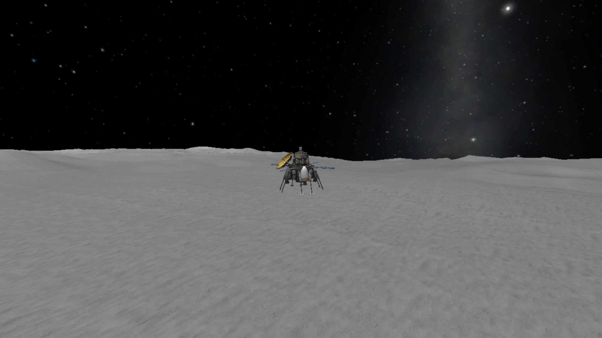

The KSPedia Online
Tips for powered landings on planets without an atmosphere
Powered landings on planets without atmospheres is harder as even though there is no atmosphere to burn up in you need to have a decent thrust to weight (TTWR) ratio. Non-atmospheric planets won’t allow you to deploy parachutes and means you must rely only on your engines and landing gear.


The TTWR needs to be quite high as a suicide burn (activating your engines at the last second) requires it. Long deceleration burns also work with lower TTWRs but you need to get a powerful engine as if you start the burn to late, you won’t slow down enough and you'll lithobrake (use the ground to slow down).